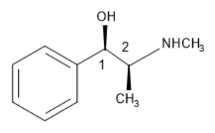
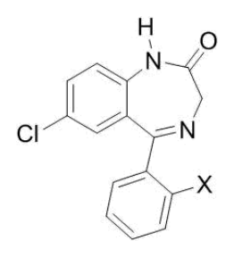
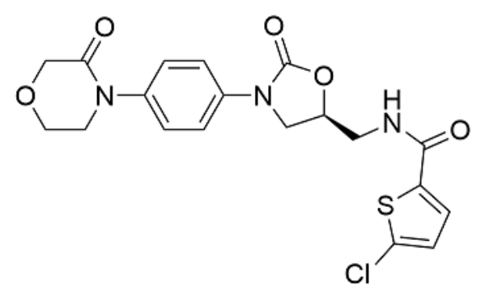
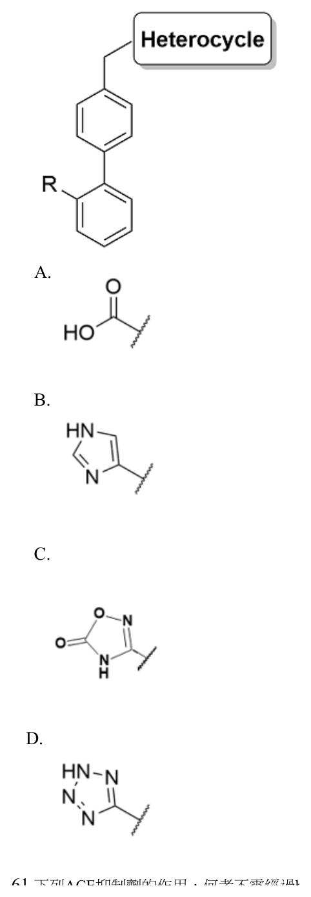
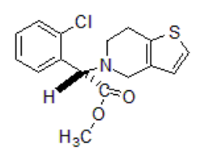
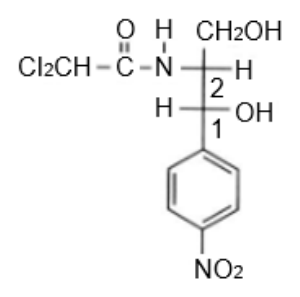
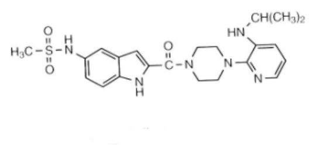

開卷有益 ／
藥師 ／ 藥理學與藥物化學 ／ 111 年第 2 次111 年第 2 次藥師藥理學與藥物化學試題與答案
這一頁是民國 111 年第 2 次藥師藥理學與藥物化學的整份歷屆試題，共 80 題，題目與標準答案出自考選部「國家考試試題及測驗式試題答案」開放資料，其中 73 題附有詳解。以下逐題列出題幹、選項與答案；要計時作答或記錄成績，請用線上練習。
考選部原始場次代碼：111100
線上作答這一科 →
全部 80 題
第 1 題
下列藥物何者會抑制肝臟的代謝酵素？
（A） griseofulvin（B） ketoconazole（C） phenytoin（D） rifampin答案：（B）
詳解與考點 正解：肝臟代謝酵素抑制劑會降低受質藥物的代謝；ketoconazole 是典型的 CYP 抑制劑，尤其可明顯抑制 CYP3A，因此可能提高併用藥物的血中濃度，故選 B。
A：griseofulvin 會誘導肝臟微粒體代謝酵素，方向是加速受質代謝，不是抑制代謝。
C：phenytoin 是常見的肝臟代謝酵素誘導劑，會使部分併用藥物的清除增加，故非答案。
D：rifampin 是強力酵素誘導劑，常使 CYP 受質藥物濃度下降；分辨關鍵在酵素誘導與抑制對血中濃度的方向相反。
本題考點：細胞色素 P450 抑制（CYP inhibition）——看到 ketoconazole 時，優先聯想到代謝下降與併用藥濃度上升；酵素誘導（enzyme induction）——griseofulvin、phenytoin 與 rifampin 會使代謝加快，與抑制劑的效果相反。
第 2 題
下列藥物何者可以經由抑制phosphodiesterase，而增加細胞內cAMP？
（A） parathyroid hormone（B） milrinone（C） corticotropin（D） glucagon答案：（B）
詳解與考點 正解：題幹指定的機轉是抑制 phosphodiesterase，使原本被分解的 cAMP 累積。milrinone 抑制 PDE3，可增加細胞內 cAMP，故選 B。
A：parathyroid hormone 是經由受體活化 Gs 與 adenylyl cyclase 來增加 cAMP，並非直接抑制 phosphodiesterase。
C：corticotropin 透過受體訊號促進 cAMP 生成，其上游位置與（B）抑制 cAMP 分解不同。
D：glucagon 也是經由 Gs-adenylyl cyclase 路徑增加 cAMP；看似同樣使 cAMP 上升，但本題問的是抑制 phosphodiesterase 的藥物。
本題考點：phosphodiesterase 抑制（phosphodiesterase inhibition）——要找抑制 cAMP 分解的藥物時，辨認 PDE 抑制劑如 milrinone；Gs 訊號（Gs-coupled signaling）——受體活化 adenylyl cyclase 是增加 cAMP 生成，不能與減少 cAMP 分解混為同一機轉。
第 3 題
下列有關藥物在人體內產生conjugation代謝反應的敘述，何者錯誤？
（A） 包括弱酸或弱鹼之藥物（B） 胺基酸可為此反應之輔助因子（C） 不需要高能量中間體（high-energy intermediates）即可進行活化反應（D） 需要代謝酵素之存在答案：（C）
詳解與考點 正解：conjugation 屬第二相代謝，轉移反應通常須先由高能量中間體活化共軛基團，例如 UDP-glucuronic acid 或 PAPS。（C）說不需要 high-energy intermediates 即可進行活化反應，與此原理相反，故選 C。
A：弱酸或弱鹼藥物只要具有或先經代謝產生可反應的官能基，就可進行共軛反應，故此敘述正確。
B：胺基酸可作為部分共軛反應的受體或輔助因子，例如與適當受質形成胺基酸共軛，故此敘述正確。
D：共軛反應需由各類 transferase 等代謝酵素催化，才能把共軛基團轉移到受質上，故此敘述正確。
本題考點：第二相代謝（phase II conjugation）——判斷共軛反應時，先找可接合的官能基與對應 transferase；高能量中間體（high-energy intermediate）——共軛基團常須先被活化後才能有效轉移，不能把第二相代謝誤認為不需能量的反應。
第 4 題
造成penicillin產生抗藥性的原因，下列何者錯誤？
（A） β–lactamase的存在（B） 無法結合到penicillin結合蛋白（C） 增進penicillin排除（D） 在格蘭氏陽性菌株外膜因為膜孔蛋白（porin）表現量下降，使藥物不易進入答案：（D）
詳解與考點 正解：β-lactam 類抗藥性的屏障位置要先分清細菌構造。（D）格蘭氏陽性菌沒有格蘭氏陰性菌特有的外膜，因此不能以其外膜 porin 表現量下降解釋 penicillin 抗藥性，故選 D。
A：β-lactamase 可水解 β-lactam 環，使 penicillin 失去與標的結合的能力，是常見抗藥機轉。
B：penicillin 結合蛋白改變或親和力下降，會使 penicillin 無法有效結合標的，屬正確的抗藥機轉。
C：增加 penicillin 排除可降低細胞內或周邊有效藥物濃度，屬藥物外排相關的抗藥機轉。
本題考點：β-lactam 抗藥性（β-lactam resistance）——依序判斷藥物是否被 β-lactamase 破壞、標的 PBP 是否改變、或藥物濃度是否被排除；外膜與 porin（outer membrane and porin）——外膜 porin 是格蘭氏陰性菌的通透性概念，不能套到格蘭氏陽性菌。
第 5 題
有關藥物引起的過敏性反應，下列敘述何者錯誤？
（A） penicillins及cephalosporins都可能會引起藥物過敏反應（B） 若對penicillins有過敏反應，通常也會有較高的cephalosporins過敏反應風險（C） cephalexin比cefepime較不易產生交叉性過敏反應（D） penicillin容易與aminopenicillins產生交叉過敏反應答案：（C）
詳解與考點 正解：β-lactam 類交叉過敏的分辨重點是側鏈相似性，不是單看 cephalosporin 世代。（C）cephalexin 的側鏈與 aminopenicillins 較相近，交叉過敏風險反而可高於側鏈差異較大的 cefepime，因此「較不易」的敘述錯誤，故選 C。
A：penicillins 與 cephalosporins 都可能引起藥物過敏反應，故此敘述正確。
B：對 penicillins 有過敏反應者，若改用具有相近側鏈的 cephalosporins，交叉過敏風險會提高；本選項的重點是風險上升而非所有 cephalosporins 風險相同，故非答案。
D：penicillin 與 aminopenicillins 同屬結構相近的 β-lactam 類，彼此可見交叉過敏反應，故此敘述正確。
本題考點：β-lactam 過敏（β-lactam allergy）——評估交叉過敏時先比對 R1 側鏈，不以世代高低作唯一判準；cephalosporin 交叉反應（cephalosporin cross-reactivity）——側鏈越相近，越應提高對交叉過敏的警覺。
第 6 題
有關leucovorin在化療中的作用，下列何者正確？
（A） 可以促進methotrexate經由腎臟排除（B） 與5-fluorouracil合併使用可減緩5-fluorouracil的代謝（C） 可用於大腸直腸癌造成癌細胞死亡（D） 與methotrexate併用可減低methotrexate對正常細胞的毒性答案：（D）
詳解與考點 正解：leucovorin 是還原型葉酸，可在高劑量 methotrexate 治療後提供正常細胞繞過被抑制的葉酸代謝途徑，降低正常組織毒性，故選 D。
A：促進 methotrexate 腎臟排除主要依賴足夠水分與尿液鹼化等措施；leucovorin 的主要角色是葉酸救援，不是增加腎臟排除。
B：leucovorin 與 5-fluorouracil 併用時會穩定其對 thymidylate synthase 的抑制複合體，增強抗腫瘤作用，不是減緩 5-fluorouracil 的代謝。
C：leucovorin 本身不是以直接殺死大腸直腸癌細胞為主要目的；它在該治療情境中是調節 5-fluorouracil 效果的輔助藥物。
本題考點：leucovorin rescue——高劑量 methotrexate 後用還原型葉酸保護正常細胞，不能把救援作用誤作排除作用；5-fluorouracil modulation——leucovorin 可增強 5-fluorouracil 對 thymidylate synthase 的抑制，屬增效而非減慢代謝。
第 7 題
若非小細胞肺癌病患檢測出有EGFR（L858R）變異，可使用下列何種藥物治療較適當？
（A） bosutinib（B） sunitinib（C） erlotinib（D） carfilzomib答案：（C）
詳解與考點 正解：非小細胞肺癌出現 EGFR L858R 變異時，治療應優先選擇可抑制 EGFR tyrosine kinase 的標靶藥物。erlotinib 為 EGFR tyrosine kinase inhibitor，故選 C。
A：bosutinib 主要抑制 BCR-ABL 與 Src 相關路徑，適應症方向與 EGFR L858R 非小細胞肺癌不同。
B：sunitinib 是多重 tyrosine kinase inhibitor，主要標的包括 VEGFR 與 PDGFR；雖同為標靶治療，但不是針對本題 EGFR 變異的首要藥物。
D：carfilzomib 為 proteasome inhibitor，主要用於多發性骨髓瘤，不以 EGFR 變異為治療標的。
本題考點：EGFR 突變肺癌（EGFR-mutated non-small cell lung cancer）——看到 L858R 時，先連結至 EGFR tyrosine kinase inhibitor；標靶藥物配對（targeted therapy matching）——同為 kinase inhibitor 不代表同一適應症，必須比對腫瘤的驅動變異與藥物標的。
第 8 題
下列藥物中何者之主要作用細胞，與其它藥物作用之細胞不同？
（A） alefacept（B） basiliximab（C） afatinib（D） nivolumab答案：（C）
詳解與考點 正解：本題要比較主要受作用影響的細胞。（A）alefacept、（B）basiliximab 與（D）nivolumab 都以 T 細胞活化或免疫檢查點調節為核心；afatinib 主要抑制腫瘤細胞的 ErbB 家族受體，作用細胞不同，故選 C。
A：alefacept 透過與 T 細胞相關的 CD2 路徑抑制 T 細胞活化，主要作用於免疫細胞，故非答案。
B：basiliximab 阻斷活化 T 細胞上的 IL-2 receptor α chain，主要調節 T 細胞反應，故非答案。
D：nivolumab 阻斷 PD-1 免疫檢查點，目的在恢復 T 細胞對腫瘤的免疫反應，主要作用脈絡仍在 T 細胞。
本題考點：免疫調節藥物（immunomodulatory agents）——辨認 alefacept、basiliximab 與 nivolumab 時，先看其是否直接調節 T 細胞；ErbB 抑制（ErbB inhibition）——afatinib 直接作用於腫瘤細胞受體，不能因同為抗腫瘤治療就歸入免疫細胞標的。
第 9 題
Chloroquine用於治療Plasmodium vivax及Plasmodium ovale引起之瘧疾時，需併用下列何者才可以殺死肝臟內之 瘧原蟲休眠體（liver hypnozoites），以利根除感染？
（A） artesunate（B） metronidazole（C） sulfamethoxazole（D） primaquine答案：（D）
詳解與考點 正解：Plasmodium vivax 與 Plasmodium ovale 會在肝臟形成休眠體，chloroquine 主要處理血液期瘧原蟲；要根除肝臟內 hypnozoites，須併用 primaquine，故選 D。
A：artesunate 對血液期瘧原蟲具快速作用，但不是清除肝臟休眠體的根除治療藥物。
B：metronidazole 主要治療厭氧菌與特定原蟲感染，沒有清除瘧原蟲肝臟休眠體的作用。
C：sulfamethoxazole 不具有針對 Plasmodium vivax 或 Plasmodium ovale 肝臟休眠體的根除作用。
本題考點：瘧疾根除治療（radical cure of malaria）——遇到 Plasmodium vivax 或 Plasmodium ovale 時，除血液期治療外要另想肝臟 hypnozoites；primaquine（primaquine）——其定位是清除肝臟休眠體，不能與只處理血液期的藥物混用。
第 10 題
有關抗凝血藥物（anticoagulants）heparin之副作用，下列敘述何者錯誤？
（A） 出血（bleeding）（B） 血小板減少症（thrombocytopenia）（C） 表皮壞死（cutaneous necrosis）（D） 骨質疏鬆及骨折（osteoporosis and spontaneous fractures）答案：（C）
詳解與考點 正解：表皮壞死（cutaneous necrosis）是抗凝血藥物中較典型與 warfarin 連結的副作用，機轉是治療初期蛋白 C（protein C）半衰期短而先被抑制，造成短暫的凝血傾向、微血管血栓進而皮膚壞死；heparin 的副作用譜不以此為典型代表，故此敘述用來描述 heparin 是錯誤的，選 C。
A：出血是所有抗凝血藥物共通且最常見的副作用，heparin 也不例外，這項敘述正確。
B：血小板減少症（HIT，heparin-induced thrombocytopenia）是 heparin 極具代表性的副作用，這項敘述正確。
D：長期使用 heparin 確實與骨質疏鬆及自發性骨折有關，這是 heparin 慢性副作用中被廣泛記載的一項，敘述正確。
本題考點：heparin 與 warfarin 副作用的區辨（heparin vs warfarin adverse effects）——出血、HIT、骨質疏鬆是 heparin 的代表性副作用，皮膚壞死則是與 warfarin 蛋白 C 短暫缺乏機轉連結的典型副作用，兩者在考題中常互為誘答。
第 11 題
下列生物製劑或藥物何者無法促進骨髓造血功能？
（A） erythropoietin（B） granulocyte colony-stimulating factor（G-CSF）（C） abciximab（D） romiplostim答案：（C）
詳解與考點 正解：促進骨髓造血的藥物會分別刺激紅血球、嗜中性白血球或血小板生成。（C）abciximab 是血小板 glycoprotein IIb/IIIa 受體拮抗劑，用於抑制血小板聚集，不能促進骨髓造血，故選 C。
A：erythropoietin 刺激紅血球前驅細胞分化與成熟，可促進紅血球生成，故非答案。
B：granulocyte colony-stimulating factor（G-CSF）促進嗜中性白血球系造血，可用於降低或縮短中性白血球低下，故非答案。
D：romiplostim 為 thrombopoietin receptor agonist，可刺激巨核細胞與血小板生成，故非答案。
本題考點：造血生長因子（hematopoietic growth factors）——先把 erythropoietin、G-CSF 與 thrombopoietin receptor agonist 對應到紅血球、嗜中性白血球與血小板；glycoprotein IIb/IIIa 拮抗（glycoprotein IIb/IIIa antagonism）——abciximab 作用在成熟血小板的聚集過程，不能與骨髓造血刺激劑混淆。
第 12 題
下列藥物何者之作用機轉為抑制calcineurin之活性？
（A） atorvastatin（B） ethambutol（C） tacrolimus（D） desipramine答案：（C）
詳解與考點 正解：calcineurin inhibitor 會阻斷 T 細胞活化所需的 calcineurin 訊號。tacrolimus 與 FKBP12 結合後抑制 calcineurin，降低 IL-2 等細胞激素轉錄，故選 C。
A：atorvastatin 抑制 HMG-CoA reductase，主要用於降低膽固醇合成，不抑制 calcineurin。
B：ethambutol 抑制分枝桿菌細胞壁 arabinogalactan 合成相關酵素，作用標的不是 T 細胞訊號。
D：desipramine 為 tricyclic antidepressant，主要抑制 norepinephrine reuptake，與 calcineurin 無關。
本題考點：calcineurin inhibitor——tacrolimus 與 FKBP12 結合後抑制 calcineurin，是辨認免疫抑制機轉的固定配對；T 細胞活化（T-cell activation）——判斷免疫抑制劑時，先看其是否阻斷 IL-2 相關轉錄訊號，再與降脂、抗結核或抗憂鬱藥的標的區分。
第 13 題
下列關於corticosteroids製劑臨床用途的敘述，何者正確？
（A） cortisone主要作為鹽皮質固醇不足（aldosterone insufficiency）病人之補充用藥（B） fludrocortisone具最強效抗發炎的能力，常用於治療嚴重感染（C） prednisolone可長期用於治療發炎及自體免疫性疾病（D） dexamethasone最常用以促進胎兒肺功能成熟答案：（C）
詳解與考點 正解：（C）prednisolone 具糖皮質素活性，抗發炎與免疫抑制作用可長期用於發炎及自體免疫疾病的控制，敘述正確。（D）dexamethasone 雖可作為產前 corticosteroid 促進胎兒肺成熟，但產前促肺成熟的傳統首選為 betamethasone，且 dexamethasone 本身的臨床用途以抗發炎、免疫抑制、腦水腫與化療引起噁心嘔吐的處置為大宗，「最常用以促進胎兒肺功能成熟」的絕對限定並不成立，故選 C。
A：cortisone 非鹽皮質素不足的主要補充藥；需 aldosterone 樣作用時，應選鹽皮質素效力較強者。
B：fludrocortisone 以強鹽皮質素活性見長，並非最強抗發炎藥，也不用於治療嚴重感染。
D：dexamethasone 確實可促進胎兒肺成熟，不能由機轉直接排除；但其臨床用途以抗發炎、免疫抑制、腦水腫與化療引起噁心嘔吐的處置為大宗，產前促肺成熟的傳統首選則為 betamethasone，（D）以「最常用」作絕對限定與此不符。
本題考點：糖皮質素與鹽皮質素效力（glucocorticoid and mineralocorticoid potency）——替代治療時，先對照所缺的是抗發炎或 aldosterone 樣作用；prednisolone——慢性自體免疫疾病的控制可用糖皮質素，但須衡量長期副作用；產前 corticosteroid（antenatal corticosteroid）——分辨可用藥物與各地最常用方案，避免將兩者當成同一絕對命題。
第 14 題
下列關於mifepristone之敘述，何者錯誤？
（A） 可拮抗子宮之progesterone受體（B） 可當作性行為後避孕藥（C） 只能在懷孕七週內產生墮胎效果（D） 常和PGI2製劑合併使用以增強墮胎效果答案：（D）
詳解與考點 正解：題幹問 mifepristone 的錯誤敘述。它拮抗 progesterone receptor，藥物流產會合併促進子宮收縮的 prostaglandin 類藥物；（D）卻指定 PGI2。PGI2 即 prostacyclin，不是典型的子宮收縮合併藥，故選 D。
A：mifepristone 可拮抗子宮的 progesterone receptor，敘述正確，故非答案。
B：mifepristone 具有性行為後避孕的藥理用途，敘述正確，故非答案。
C：mifepristone 終止早期妊娠的傳統核准範圍以懷孕七週內為主，本題依此把此句視為正確；惟合併 prostaglandin 的藥物流產於七週之後仍具療效，「只能」的絕對限定按現行臨床規範並不嚴謹，本題須在四個選項中選出敘述最明確錯誤者，此項的瑕疵僅在絕對用語，把握度應降低。
本題考點：mifepristone（progesterone receptor antagonist）——看到阻斷 progesterone 時，連結到終止早期妊娠；藥物流產合併機轉（medical abortion regimen）——找可促進子宮收縮的 prostaglandin 作用，而非只看名稱含 PG；緊急避孕（emergency contraception）——區分性行為後避孕與治療既有妊娠。
第 15 題
下列口服降血糖藥物，何者可以抑制dipeptidyl peptidase 4，使內生性之glucagon-like peptide-1作用時間延長， 而增加胰臟insulin釋放量？
（A） canagliflozin（B） exenatide（C） glimepiride（D） saxagliptin答案：（D）
詳解與考點 正解：題幹指定抑制 dipeptidyl peptidase 4 以延長內生性 glucagon-like peptide-1；（D）saxagliptin 是 DPP-4 inhibitor，減少 incretin 分解，使血糖升高時胰島素釋放增加，故選 D。
A：canagliflozin 抑制腎近端小管 sodium-glucose cotransporter 2，增加尿糖排出，作用位置不在 DPP-4。
B：exenatide 是 GLP-1 receptor agonist，直接模擬 GLP-1；它與（D）都利用 incretin 路徑，但不是抑制 GLP-1 分解。
C：glimepiride 為 sulfonylurea，關閉 β 細胞 ATP-sensitive potassium channel 以促進胰島素釋放，沒有抑制 DPP-4。
本題考點：DPP-4 抑制劑（DPP-4 inhibitor）——題幹出現延長內生性 GLP-1 時，找阻止 incretin 分解的藥物；GLP-1 receptor agonist——判斷 exenatide 時，分清直接刺激受體與延長內生性 peptide 半衰期。
第 16 題
下列何者為somatostatin同類物，可用來治療肢端肥大症（acromegaly）？
（A） bromocriptine（B） desmopressin（C） leuprolide（D） octreotide答案：（D）
詳解與考點 正解：肢端肥大症的核心是生長激素過多，somatostatin 同類物可抑制生長激素分泌；（D）octreotide 即為此類藥物，故選 D。
A：bromocriptine 是 dopamine D2 receptor agonist，可藉多巴胺途徑影響部分垂體疾病，但不是 somatostatin 同類物。
B：desmopressin 是 vasopressin 類似物，主要利用其 antidiuretic hormone 樣作用處理尿崩症或特定止血需求，受體與作用目標不同。
C：leuprolide 是 gonadotropin-releasing hormone agonist，持續給藥後抑制腦下垂體性腺軸，並非抑制生長激素的 somatostatin 類藥。
本題考點：somatostatin 同類物（somatostatin analog）——看到需抑制生長激素分泌的肢端肥大症時，優先辨認 octreotide 類藥物；垂體相關肽類藥物（pituitary peptide therapeutics）——先按作用受體分成 somatostatin、vasopressin 與 gonadotropin-releasing hormone 路徑，再判斷適應症。
第 17 題
下列何種利尿劑為肝硬化（cirrhosis）之禁用藥物，可能導致尿液鹼化而減少尿NH4+排出，而造成高血氨 （hyperammonemia）及肝腦病變（hepatic encephalopathy）併發症？
（A） furosemide（B） acetazolamide（C） thiazide（D） triamterene答案：（B）
詳解與考點 正解：尿液鹼化與尿中 NH4+ 排出減少提示 carbonic anhydrase inhibition；（B）acetazolamide 增加 bicarbonate 排出而使尿液鹼化，NH4+ 較不易留在尿中排出，會增加高血氨及肝腦病變風險，故選 B。
A：furosemide 抑制 thick ascending limb 的 Na+/K+/2Cl- transporter，並非以 carbonic anhydrase inhibition 造成尿液鹼化。
C：thiazide 抑制 distal convoluted tubule 的 Na+/Cl- cotransporter，作用位置與題幹機轉不同。
D：triamterene 阻斷 collecting duct 的 epithelial sodium channel，為 potassium-sparing diuretic，沒有 bicarbonaturia 與尿液鹼化特徵。
本題考點：carbonic anhydrase inhibitor——看到 bicarbonate 排出增加與尿液鹼化時，辨認 acetazolamide；尿中 ammonium trapping——判讀高血氨風險時，看尿液酸化是否足以讓 NH4+ 留在尿中排出。
第 18 題
NSAIDs類藥物（例如indomethacin）可能會影響nephrotic syndrome或hepatic cirrhosis病人服用furosemide的利 尿作用，其影響的機制為何？
（A） 抑制PGE2生成（B） 抑制Na+/K+/2Cl- transporter（C） 抑制COX-1（D） 抑制尿酸排除答案：（A）
詳解與考點 正解：NSAIDs 會抑制腎臟 prostaglandin 生成，而 furosemide 的利鈉與利尿反應部分仰賴腎內 PGE2；（A）抑制 PGE2 生成會降低腎血流與利尿反應，因此在 nephrotic syndrome 或 hepatic cirrhosis 的病人更可能削弱 furosemide 效果，故選 A。
B：Na+/K+/2Cl- transporter 是 furosemide 的直接作用標的；NSAIDs 不是藉直接阻斷此 transporter 使利尿效果下降。
C：部分 NSAIDs 可抑制 COX-1，但題幹所問的是導致利尿反應變差的生理介質。只說 COX-1 過於狹窄，不能取代 PGE2 下降這個直接機轉。
D：尿酸排出改變可見於某些藥物或劑量情境，與 NSAIDs 削弱 furosemide 利尿反應的主要機轉無關。
本題考點：腎臟 prostaglandin（renal prostaglandin）——遇到 NSAIDs 使利尿劑變弱時，先連結 PGE2 減少與腎血流、利鈉反應下降；loop diuretic——看到 Na+/K+/2Cl- transporter 時，判定它是 furosemide 的直接作用位置，不是 NSAIDs 的交互作用位置。
第 19 題
下列抗心律不整藥何者同時具有β blocker及potassium channel blocker的藥理作用？
（A） propranolol（B） sotalol（C） propafenone（D） procainamide答案：（B）
詳解與考點 正解：同時具有 β blocker 與 potassium channel blocker 作用，須同時符合 class II 與 class III；（B）sotalol 阻斷 β receptor 與 potassium channel，延長再極化與不應期，故選 B。
A：propranolol 是非選擇性 β blocker，屬 class II，沒有 class III 的 potassium channel blocking 作用。
C：propafenone 主要是 class IC sodium channel blocker，雖有 β-blocking 性質，卻非 potassium channel blocker。
D：procainamide 是 class IA sodium channel blocker，可延長動作電位，但無 β-blocking 作用。
本題考點：抗心律不整藥分類（Vaughan Williams classification）——同時提 β blockade 與 potassium channel block 時，辨認 sotalol 的 class II+III 特徵；再極化延長（repolarization prolongation）——class III 藥物抑制 potassium efflux，使不應期延長。
第 20 題
Nitroglycerin（NTG）經由舌下或經皮膚（貼劑）給藥有下列何項優點？
（A） 作用緩和，藥效持久長達48小時（B） 避開肝臟代謝之首渡效應（C） 減少低血壓之副作用（D） 減少反射性心搏過速答案：（B）
詳解與考點 正解：Nitroglycerin 經舌下黏膜或皮膚吸收後可直接進入體循環，避開口服後先經肝臟的首渡代謝；（B）正是這兩種給藥途徑的重要優點，故選 B。
A：舌下 nitroglycerin 的特性是起效快速，不是作用緩和；貼劑雖可延長作用，但持續暴露會有耐受性問題，不能以長達 48 小時作為這兩種途徑共同的優點。
C：nitroglycerin 的血管擴張仍可能造成低血壓，改變給藥途徑不會把這項藥理性副作用消除。
D：血管擴張造成的血壓下降仍可能引起反射性心搏過速，舌下或貼劑給藥不是為了減少此反應。
本題考點：首渡效應（first-pass effect）——需要避免肝臟初次代謝時，辨認舌下、經皮等不經門脈循環的途徑；nitroglycerin 給藥途徑（nitroglycerin administration routes）——急性症狀看舌下快速起效，維持治療才看貼劑的持續釋放與耐受性管理。
第 21 題
Renin angiotensin system作用藥物用於治療高血壓時，下列敘述何者錯誤？
（A） enalapril是angiotensin-converting enzyme（ACE）的抑制劑（B） 會產生高血鉀副作用（C） aliskiren可與valsartan併用可增加降壓效果且降低副作用（D） 使用angiotensin II receptor blockers較少發生乾咳答案：（C）
詳解與考點 正解：本題問 renin angiotensin system 藥物的錯誤敘述，關鍵是避免雙重 RAAS blockade；（C）併用 direct renin inhibitor aliskiren 與 angiotensin II receptor blocker valsartan，會增加高血鉀、低血壓與腎功能惡化風險，不能說會降低副作用，故選 C。
A：enalapril 抑制 angiotensin-converting enzyme，屬 ACE inhibitor，敘述正確，故非答案。
B：RAAS 被抑制後 aldosterone 作用下降、遠端排鉀減少，可能造成高血鉀，敘述正確，故非答案。
D：ARB 不抑制 ACE，較少累積 bradykinin，因此比 ACE inhibitor 較少乾咳，敘述正確，故非答案。
本題考點：雙重 RAAS blockade（dual RAAS blockade）——併用 ACE inhibitor、ARB 或 direct renin inhibitor 時，先評估是否重複壓低同一路徑並增加腎臟與血鉀風險；ACE inhibitor 引起乾咳（bradykinin-mediated cough）——乾咳的分辨點是 bradykinin 累積，故 ARB 通常較少出現。
第 22 題
同時含有ezetimibe及statins的降血脂複方藥中，ezetimibe的藥理機制為何？
（A） bile acid binding resins（B） intestinal sterol absorption inhibitor（C） Apo B synthesis inhibitor（D） HMG-CoA reductase inhibitor答案：（B）
詳解與考點 正解：ezetimibe 的作用位置在小腸刷狀緣，抑制 dietary cholesterol 與植物固醇吸收；（B）intestinal sterol absorption inhibitor 正確描述其機轉。與 statin 合併時，分別減少腸道吸收與肝臟合成，故選 B。
A：bile acid binding resins 在腸道結合膽酸、阻斷腸肝循環，並非 ezetimibe 的直接作用方式。
C：Apo B synthesis inhibitor 抑制 apolipoprotein B 生成，作用目標不同於 ezetimibe 的腸道 sterol transport。
D：HMG-CoA reductase inhibitor 是 statins 的機轉；兩者同為降脂藥而容易混淆，但 ezetimibe 不抑制膽固醇合成酵素。
本題考點：ezetimibe（intestinal sterol absorption inhibitor）——看到腸道 cholesterol 吸收受阻時，辨認 ezetimibe；statin（HMG-CoA reductase inhibitor）——看到肝臟 cholesterol 合成受抑制時，辨認 statin；複方降脂治療（combination lipid-lowering therapy）——分開比對各成分的作用位置。
第 23 題
下列何種藥物最適用於心絞痛之急性發作（acute episode）？
（A） diltiazem（B） nifedipine（C） nitroglycerin（D） propranolol答案：（C）
詳解與考點 正解：心絞痛急性發作需要快速降低心肌氧氣需求並緩解缺血；（C）nitroglycerin 以舌下給藥可迅速產生靜脈擴張、降低 preload，因此是急性發作的適用藥物，故選 C。
A：diltiazem 可藉降低心率與血管擴張用於心絞痛控制，但不作為急性發作時最迅速的救援選擇。
B：nifedipine 是 calcium channel blocker，雖有血管擴張作用，但不是題幹所問急性心絞痛的標準立即緩解藥；把所有血管擴張藥都當成急救藥，是此題的主要混淆點。
D：propranolol 可降低心率與心肌收縮力以減少氧氣消耗，較適合預防性控制，無法取代舌下 nitroglycerin 的快速症狀緩解。
本題考點：急性心絞痛處置（acute angina relief）——題幹出現 acute episode 時，優先找起效快的舌下 nitroglycerin；nitrate 的血流動力學（nitrate hemodynamics）——靜脈擴張降低 preload 與心室壁張力，進而降低心肌耗氧；預防與救援治療（prophylaxis versus rescue therapy）——能長期減少發作的 β blocker 或 calcium channel blocker，不等於急性發作的首選。
第 24 題
下列有關digoxin副作用的敘述，何者錯誤？
（A） 會引起便秘（B） 會刺激chemoreceptor trigger zone而引起嘔吐（C） 會使老年人迷失方向感（D） 會引起視幻覺答案：（A）
詳解與考點 正解：digoxin 毒性常見胃腸、神經與視覺症狀，胃腸道以厭食、噁心、嘔吐或腹瀉較典型；（A）便秘不是其典型副作用，故選 A。
B：digoxin 可刺激 chemoreceptor trigger zone 而誘發噁心與嘔吐，敘述正確，故非答案。
C：老年人對 digoxin 毒性較敏感，可能出現混亂、定向感障礙等中樞神經症狀，敘述正確，故非答案。
D：digoxin 可造成視覺異常，包括色覺改變、光暈或視覺幻覺，敘述正確，故非答案。
本題考點：digoxin toxicity——遇到噁心、嘔吐、混亂與視覺改變的組合時，優先連結 digoxin 毒性；chemoreceptor trigger zone——判讀藥物引起嘔吐時，區分直接刺激 CTZ 的中樞機轉與單純腸胃蠕動改變；老年人藥物毒性（geriatric drug toxicity）——高齡病人新出現定向感障礙時，要把藥物累積列入鑑別。
第 25 題
殺蟲劑parathion因使用頻繁，意外中毒事件時有所聞，下列何者最不適合作為治療parathion中毒藥物？
（A） pralidoxime（B） atropine（C） diacetylmonoxime（D） carbachol答案：（D）
詳解與考點 正解：parathion 中毒屬有機磷造成 acetylcholinesterase 失活，治療方向是阻斷過量 acetylcholine 的 muscarinic 效應或恢復酵素活性；（D）carbachol 是直接 cholinergic agonist，會加重膽鹼性症狀，最不適合作為治療藥物，故選 D。
A：pralidoxime 是 oxime 類藥物，可在 acetylcholinesterase 老化前協助恢復被有機磷磷酸化的酵素活性，敘述正確，故非答案。
B：atropine 阻斷 muscarinic receptor，可控制分泌增加、支氣管收縮與心搏過緩等症狀，敘述正確，故非答案。
C：diacetylmonoxime 亦屬 oxime 類 acetylcholinesterase reactivator，符合處理有機磷酵素失活的方向，敘述正確，故非答案。
本題考點：有機磷中毒（organophosphate poisoning）——看到 acetylcholinesterase 被抑制時，先判斷症狀源於 acetylcholine 過量；atropine——處理 muscarinic 毒性時，找受體拮抗劑而非 cholinergic agonist；oxime reactivator——重點是及早恢復尚未老化的 acetylcholinesterase。
第 26 題
兒茶酚胺（catecholamine）再回收抑制劑臨床應用廣泛，下列敘述何者錯誤？
（A） reboxetine可用於治療重度憂鬱（B） sibutramine可降低食慾（C） milnacipran可治療肌纖維疼痛（D） atomoxetine可用來治療姿態性低血壓答案：（D）
詳解與考點 正解：atomoxetine 是選擇性正腎上腺素再回收抑制劑，核准適應症是注意力不足過動症（ADHD），臨床上並不用來治療姿態性低血壓；治療姿態性低血壓常用的是 midodrine（α1 受體促效劑）或 droxidopa 等藥物，並非 atomoxetine，故此敘述錯誤，選 D。
A：reboxetine 屬選擇性正腎上腺素再回收抑制劑，臨床上用於治療重度憂鬱症，敘述正確。
B：sibutramine 為血清素／正腎上腺素／多巴胺再回收抑制劑，過去曾核准用於降低食慾以輔助減重，敘述正確。
C：milnacipran 屬 SNRI，已核准用於治療肌纖維疼痛（fibromyalgia），敘述正確。
本題考點：兒茶酚胺再回收抑制劑的臨床應用區辨（catecholamine reuptake inhibitors）——同樣以正腎上腺素／多巴胺再回收抑制為機轉的藥物，適應症差異很大，atomoxetine 專用於 ADHD，不涉及姿態性低血壓的治療。
第 27 題
腎上腺素性受體可有alpha及beta兩種亞型，下列擬交感神經作用劑在有藥理作用劑量時，何者對於腎上腺素 性beta亞型受體親和力較大？
（A） methoxamine（B） clonidine（C） dobutamine（D） phenylephrine答案：（C）
詳解與考點 正解：題幹要找在藥理作用劑量下對 β adrenergic receptor 親和力較大的擬交感神經作用劑；（C）dobutamine 以 β1 作用為主，可增加心肌收縮力，故選 C。
A：methoxamine 主要作用於 α1 adrenergic receptor，造成血管收縮，不是 β 受體親和力較大的藥物。
B：clonidine 主要是 α2 adrenergic receptor agonist，藉中樞交感神經抑制降低血壓，作用方向不同。
D：phenylephrine 選擇性較高地作用於 α1 adrenergic receptor，常見的是血管收縮與血壓上升，而非 β 刺激。
本題考點：adrenergic receptor selectivity——看到正性肌力作用或 β1 偏好時，辨認 dobutamine；α1 agonist——遇到 methoxamine 或 phenylephrine 時，連結血管收縮而不是心肌 β1 刺激；α2 agonist——看到 clonidine 時，判為中樞交感神經輸出降低的藥物。
第 28 題
下列膽鹼受體阻斷劑作用之敘述，何者錯誤？
（A） 給與吸入性麻醉劑前，先給與膽鹼受體阻斷劑可以減少氣管分泌與喉頭痙攣（B） 選擇性M3受體之膽鹼受體阻斷劑可促使支氣管舒張，緩解氣喘和慢性呼吸道阻塞病患症狀（C） 膽鹼受體阻斷劑可暫時緩解腹瀉（D） 膽鹼受體阻斷劑造成心跳減慢是因為阻斷受迷走神經支配的心室細胞答案：（D）
詳解與考點 正解：膽鹼受體阻斷劑阻斷心臟的副交感神經作用，會減少迷走神經對 sinoatrial node 的煞車，通常使心跳加快；（D）說會造成心跳減慢，且歸因於受迷走神經支配的心室細胞，兩者皆不正確，故選 D。
A：麻醉前給予 antimuscarinic drug 可減少氣管分泌與迷走神經反射相關問題，敘述正確，故非答案。
B：阻斷支氣管平滑肌的 M3 receptor 可減少 acetylcholine 所致支氣管收縮，因此可產生 bronchodilation、緩解氣喘或 chronic obstructive pulmonary disease 症狀，敘述正確，故非答案。
C：膽鹼受體阻斷劑可減少腸胃蠕動與分泌，因而暫時緩解腹瀉，敘述正確，故非答案。
本題考點：心臟迷走神經張力（cardiac vagal tone）——判斷 antimuscarinic drug 對心率的效果時，看 sinoatrial node 的 M2 receptor 被阻斷後心率上升；M3 receptor blockade——看到支氣管平滑肌舒張時，連結 M3 介導的 acetylcholine 收縮作用被阻斷；antimuscarinic gastrointestinal effect——需要暫時減少腸蠕動時可利用其作用，但不能把症狀緩解誤認為病因治療。
第 29 題
當慢性阻塞性肺病病人有急性發作時，常使用何種藥物？
（A） albuterol（B） indacaterol（C） salmeterol（D） tiotropium答案：（A）
詳解與考點 正解：慢性阻塞性肺病急性發作需要迅速支氣管擴張；（A）albuterol 是 short-acting β2 agonist，起效快，適合急性症狀緩解，故選 A。
B：indacaterol 是 long-acting β2 agonist，用於維持治療而非急性發作的立即救援。
C：salmeterol 也是 long-acting β2 agonist，起效較慢，不能取代 short-acting β2 agonist 的急性緩解角色。
D：tiotropium 是 long-acting muscarinic antagonist，主要用於慢性維持治療，並非急性發作時最迅速的支氣管擴張選擇。
本題考點：short-acting β2 agonist——出現急性喘鳴或 acute exacerbation 時，優先找 albuterol 類快速支氣管擴張藥；long-acting bronchodilator——看到 indacaterol、salmeterol 或 tiotropium 時，先判定其維持治療定位，勿與 rescue medication 混用。
第 30 題
有關proton pump inhibitors的敘述，下列何者錯誤？
（A） 須在空腹時使用（B） 不具耐酸性，以腸衣錠口服後在小腸吸收（C） 為prodrug，以不可逆性抑制proton pump（D） 為具脂溶性的弱酸藥物答案：（D）
詳解與考點 正解：proton pump inhibitors 是在酸性分泌小管被活化的弱鹼性 prodrug，之後不可逆抑制 gastric H+/K+-ATPase；（D）將其寫成具脂溶性的弱酸，酸鹼性質錯誤，故選 D。
A：proton pump inhibitors 通常在空腹、餐前使用，使藥物吸收後能遇到因進食而活化的 proton pump，敘述正確，故非答案。
B：這類藥物不耐胃酸，常製成 enteric-coated dosage form，通過胃後在小腸吸收，敘述正確，故非答案。
C：proton pump inhibitors 為 prodrug，活化後以不可逆方式抑制 proton pump，故能持續抑酸至新的酵素生成，敘述正確，故非答案。
本題考點：proton pump inhibitor——看到不可逆抑制 gastric H+/K+-ATPase 時，辨認 proton pump inhibitors；酸不穩定 prodrug（acid-labile prodrug）——藥物若在胃酸中易被破壞，就找 enteric-coated dosage form 與小腸吸收；給藥時機（administration timing）——餐前空腹給藥是為了讓活化藥物與進食後啟動的 proton pump 相遇。
第 31 題
下列何者可抑制xanthine oxidase，用在痛風治療？
（A） allopurinol（B） colchicine（C） sulfinpyrazone（D） indomethacin答案：（A）
詳解與考點 正解：題幹指定抑制 xanthine oxidase，以降低 purine 代謝生成 uric acid；（A）allopurinol 正是 xanthine oxidase inhibitor，可作為痛風的降尿酸治療藥物，故選 A。
B：colchicine 抑制 microtubule polymerization，主要減少中性球介導的急性發炎，並不抑制 xanthine oxidase。
C：sulfinpyrazone 是 uricosuric drug，藉改變腎小管尿酸處理而增加尿酸排出；它與（A）都能降低尿酸負荷，但不是抑制生成的機轉。
D：indomethacin 是 NSAID，可用於急性痛風發炎疼痛的控制，並不直接抑制 uric acid 生成。
本題考點：xanthine oxidase inhibitor——題幹問降低 uric acid 生成時，找 allopurinol；uricosuric drug——看到增加尿酸腎臟排出時，與抑制生成的 allopurinol 分開判斷；急性痛風抗發炎治療（acute gout anti-inflammatory therapy）——colchicine 與 NSAID 控制的是發炎反應，不是 xanthine oxidase。
第 32 題
長期使用下列何種抗發炎藥物容易造成骨質疏鬆之副作用？
（A） aspirin（B） dexamethasone（C） indomethacin（D） ibuprofen答案：（B）
詳解與考點 正解：長期 glucocorticoid exposure 會抑制成骨、增加骨吸收並減少鈣平衡的保護作用，因而造成骨質疏鬆；（B）dexamethasone 是強效 glucocorticoid，長期使用最符合此典型副作用，故選 B。
A：aspirin 是 NSAID，長期風險主要在胃腸道出血、腎功能與其他 NSAID 相關不良反應，並非 glucocorticoid 所致的典型骨質疏鬆。
C：indomethacin 亦為 NSAID，抗發炎機轉是抑制 cyclooxygenase，沒有 dexamethasone 長期改變骨代謝的 glucocorticoid 作用。
D：ibuprofen 是 NSAID，同樣不具長期 glucocorticoid 所致骨質疏鬆的典型風險；分辨關鍵在抑制 cyclooxygenase 與調節 glucocorticoid receptor 是不同機轉。
本題考點：類固醇誘發骨質疏鬆（glucocorticoid-induced osteoporosis）——題幹出現長期 corticosteroid 使用時，要主動連結骨形成下降與骨折風險；NSAID 與 glucocorticoid 的區分——同為抗發炎藥時，先看作用標的是 cyclooxygenase 或 glucocorticoid receptor，再判斷長期副作用。
第 33 題
關於抗憂鬱藥物venlafaxine的藥理機制敘述，下列何者正確？
（A） 選擇性正腎上腺素致效劑（B） 選擇性正腎上腺素及血清素再回收抑制劑（C） 選擇性多巴胺再回收抑制劑（D） 選擇性乙醯膽鹼再回收抑制劑答案：（B）
詳解與考點 正解：venlafaxine 的關鍵在同時抑制血清素與正腎上腺素的再回收，因此屬於 serotonin-norepinephrine reuptake inhibitor（SNRI）。它提高突觸間 5-HT 與 NE 的可用量，而不是直接致效於正腎上腺素受體，故選 B。
A：選項將（A）說成選擇性正腎上腺素致效劑；受體致效是直接刺激 adrenergic receptor，venlafaxine 的作用位置則是單胺轉運蛋白，兩者不同。
C：選項的選擇性 dopamine 再回收抑制不是 venlafaxine 的主要機轉。即使高濃度下可能有些微 dopamine 相關效應，也不會改變其 SNRI 分類。
D：乙醯膽鹼再回收抑制並非 venlafaxine 的作用方式；此藥不以 cholinergic transporter 為主要標的。
本題考點：單胺再回收抑制劑（monoamine reuptake inhibitor）——判斷藥物類別時先分受體致效與轉運蛋白抑制，兩者造成神經傳遞物增加的方式不同；血清素－正腎上腺素再回收抑制劑（SNRI）——同時抑制 SERT 與 NET 時，選擇同時涉及 5-HT 與 NE 的敘述。
第 34 題
下列關於可以治療臉上皺紋之肉毒桿菌毒素（botulinum toxin）的敘述，何者錯誤？
（A） 有多種免疫性各異的毒素，如BoNTs-A, B, C, D, E, F, G（B） 可以引起化學性去神經作用（chemodenervation）（C） 具切斷ACh之酵素活性（D） 可減少ACh的釋放答案：（C）
詳解與考點 正解：肉毒桿菌毒素造成鬆弛的關鍵是切割突觸前囊泡融合所需的 SNARE proteins，因而阻斷 ACh 囊泡外吐；它不是把 ACh 分子當作受質切斷，因此（C）錯誤，故選 C。
A：肉毒桿菌毒素具有免疫性不同的血清型，題列 BoNTs-A 至 BoNTs-G 的敘述正確。
B：阻斷膽鹼性神經末梢的傳遞會產生局部、可逆的功能性去神經作用，正是 chemodenervation 的意義。
D：SNARE proteins 被切割後，ACh 囊泡無法與細胞膜融合，ACh 釋放因而減少，這是肉毒桿菌毒素的直接藥理結果。
本題考點：肉毒桿菌毒素（botulinum toxin）——看到神經肌肉接點 ACh 釋放下降時，判斷其標的是突觸前囊泡融合機制，不是 ACh 本身；SNARE 蛋白（SNARE proteins）——神經傳遞物外吐需靠囊泡與膜融合，切斷此系統會造成化學性去神經。
第 35 題
下列關於治療帕金森氏症（Parkinson's disease）藥物的敘述，何者錯誤？
（A） levodopa和carbidopa凝膠劑型，經由持久的胃造瘻給藥，以治療患帕金森氏症的重症病人（B） Rytary是一長效劑型，減少藥物血中濃度之變動（fluctuation）（C） selegiline的藥理機制是抑制dopamine D2受體（D） levodopa和carbidopa合併使用是為了減少周邊levodopa轉變成dopamine答案：（C）
詳解與考點 正解：selegiline 用於 Parkinson's disease 是因其選擇性抑制 monoamine oxidase-B（MAO-B），減少 dopamine 分解；它不是 dopamine D2 receptor 拮抗劑，後者反會使帕金森症狀惡化，因此（C）錯誤，故選 C。
A：（A）描述 levodopa/carbidopa 凝膠的長期腸道輸注策略，可用於病程較嚴重且有運動波動的患者，配對正確。
B：Rytary 為 levodopa/carbidopa 的長效製劑，目的在使血中濃度較平穩、減少運動症狀的 fluctuation。
D：carbidopa 抑制周邊的芳香族 L-amino acid decarboxylase，使周邊 levodopa 較少轉成 dopamine，因而增加可進入中樞的 levodopa 比例。
本題考點：單胺氧化酶 B 抑制劑（MAO-B inhibitor）——帕金森氏症的 dopamine 缺乏可藉減少 dopamine 分解改善；周邊脫羧酶抑制（peripheral decarboxylase inhibition）——levodopa 與 carbidopa 併用時，判斷重點是減少周邊轉換而非直接補充周邊 dopamine。
第 36 題
有關benzodiazepines取代barbiturates成為較安全的鎮靜安眠藥物之敘述，下列何者錯誤？
（A） benzodiazepines較不會影響肝臟酵素（B） flumazenil可以做為benzodiazepines解毒劑（C） benzodiazepines不會產生藥物依賴性（D） barbiturates會引起致死性的中樞神經抑制作用答案：（C）
詳解與考點 正解：benzodiazepines 雖比 barbiturates 有較寬的安全範圍，仍可造成耐受性、身體依賴與停藥症狀；把它說成完全不會產生藥物依賴性不正確，因此（C）錯誤，故選 C。
A：相較於可明顯誘導肝臟藥物代謝酵素的 barbiturates，benzodiazepines 一般較少造成此類酵素誘導，這是其較安全的原因之一。
B：flumazenil 可競爭性拮抗 GABAA receptor 上的 benzodiazepine 結合位，能作為 benzodiazepines 中毒的特異性拮抗用途。
D：barbiturates 對中樞神經與呼吸的抑制會隨劑量持續加深，過量時可造成致死性呼吸抑制，安全邊際較窄。
本題考點：benzodiazepine 依賴性（benzodiazepine dependence）——藥物較安全不等於沒有耐受、依賴或戒斷風險；GABAA receptor 調節（GABAA receptor modulation）——分辨 benzodiazepines 與 barbiturates 時，除作用位點外也要比較呼吸抑制的安全邊際與肝酵素誘導。
第 37 題
手術快結束時要停止連續輸注麻醉劑，下列關於藥物的排除（elimination）速率之敘述，何者正確？
（A） context-sensitive half-time數字越大，藥物移除速率越快（B） 藥物排除速率順序（快到慢）：thiopental＞midazolam＞propofol（C） 藥物排除速率順序（快到慢）：propofol＞midazolam＞thiopental（D） 藥物排除速率順序（快到慢）：thiopental＞propofol＞midazolam答案：（C）
詳解與考點 正解：停止連續輸注後要比較的是 context-sensitive half-time，數值越短表示血中或作用部位濃度降至原來一半越快。propofol 的下降最快，midazolam 次之，thiopental 因組織蓄積而最慢，故選 C。
A：context-sensitive half-time 數字變大代表要更久才降至一半，表示移除較慢，不是較快。
B：選項把 thiopental 列為最快，忽略其長時間輸注後可由組織回流至血中的特性，順序顛倒。
D：（D）同樣把 thiopental 列為最快，且將 propofol 放在 midazolam 之後，均與停止輸注後的濃度下降速度不符。
本題考點：情境敏感半衰期（context-sensitive half-time）——連續輸注停止後，以濃度降至一半所需時間判斷恢復速度，數值愈小愈快；組織蓄積（tissue accumulation）——比較靜脈麻醉藥時，不能只看終末半衰期，還要看輸注期間累積與再分布。
第 38 題
下列那些抗癲癇藥物可用於治療失神性癲癇（absence seizures）？①phenytoin ②valproate ③ethosuximide ④gabapentin
（A） ①②（B） ②③（C） ③④（D） ①④答案：（B）
詳解與考點 正解：失神性癲癇的典型選擇是抑制丘腦 T-type calcium channel 的 ethosuximide，valproate 則是可涵蓋失神發作的廣效抗癲癇藥；所以正確組合為②③，故選 B。
A：（A）納入①phenytoin、漏掉③ethosuximide。phenytoin 主要用於局部與強直陣攣性發作，不是失神性癲癇的適當選擇。
C：（C）雖有③ethosuximide，卻以④gabapentin 取代②valproate。gabapentin 主要用於局部發作，不能據此用於失神性癲癇。
D：（D）同時列入①phenytoin 與④gabapentin，兩者都未構成本題失神性癲癇的治療組合。
本題考點：失神性癲癇（absence seizure）——出現短暫意識中斷的失神發作時，優先辨認 ethosuximide 或可涵蓋此型態的 valproate；T 型鈣離子通道（T-type calcium channel）——將藥物與丘腦節律放電連結時，可判斷 ethosuximide 的選擇性用途。
第 39 題
下列何者可以作為有機磷（organophosphate）之解毒劑？
（A） deferoxamine（B） pralidoxime（C） succimer（D） dimercaprol答案：（B）
詳解與考點 正解：有機磷會使 acetylcholinesterase（AChE）磷酸化而失活；pralidoxime 可在酵素老化前使被磷酸化的 AChE 再活化，因此是此類中毒的解毒劑，故選 B。
A：deferoxamine 是螯合鐵的藥物，作用是結合金屬離子，不能再活化受有機磷抑制的 AChE。
C：succimer 用於特定重金屬中毒的螯合治療，沒有解除有機磷與 AChE 結合的作用。
D：dimercaprol 也是重金屬螯合劑，與有機磷造成的膽鹼性危象之機轉不相符。
本題考點：有機磷中毒（organophosphate poisoning）——看到 cholinesterase 被磷酸化時，選可再活化酵素的 oxime 類藥物；酵素老化（enzyme aging）——AChE 與有機磷結合後會隨時間更難逆轉，判斷 pralidoxime 時需連結其早期再活化作用。
第 40 題
下列何者需肌肉給藥，用於治療汞、鉛及砷中毒？
（A） succimer（B） deferoxamine（C） dimercaprol（D） penicillamine答案：（C）
詳解與考點 正解：dimercaprol 是含兩個巰基的傳統重金屬螯合劑，製劑以肌肉注射給藥，可與汞、砷及特定鉛中毒情境中的金屬結合，故選 C。
A：succimer 為可口服使用的二巰基螯合劑，雖也可用於部分重金屬中毒，但不符合本題所問的肌肉給藥特徵。
B：deferoxamine 的代表性用途是螯合鐵，金屬種類與（C）不同，不能由注射給藥方式判為正解。
D：penicillamine 為口服螯合劑，常見於銅代謝相關治療；其給藥途徑與本題的 dimercaprol 不同。
本題考點：重金屬螯合治療（heavy-metal chelation）——先依中毒金屬種類選可形成穩定錯合物的螯合劑，再核對給藥途徑；dimercaprol——遇到汞、砷或特定鉛中毒且題幹強調肌肉注射時，辨認此一二巰基螯合劑。
第 41 題
下列有關antibody-drug conjugates（ADC）設計通則之敘述，何者正確？
（A） 高專一性抗體搭配高細胞毒性的小分子藥物（B） 高專一性抗體搭配低細胞毒性的小分子藥物（C） 低專一性抗體搭配高細胞毒性的小分子藥物（D） 低專一性抗體搭配低細胞毒性的小分子藥物答案：（A）
詳解與考點 正解：antibody-drug conjugate（ADC）的設計要以高專一性抗體辨認目標抗原，再把高細胞毒性的 payload 遞送進目標細胞。每個抗體可攜帶並送入細胞的藥物量有限，所以 payload 必須具高效力，故選 A。
B：（B）雖保有高專一性抗體，卻搭配低細胞毒性小分子，進入目標細胞後的殺傷力可能不足。
C：高細胞毒性 payload 若由低專一性抗體帶領，容易進入非目標細胞而增加 off-target toxicity，失去 ADC 的核心優勢。
D：低專一性抗體加上低細胞毒性小分子，同時缺乏精準遞送與足夠殺傷力，不符合 ADC 設計目的。
本題考點：抗體藥物複合體（antibody-drug conjugate）——設計時把抗體的抗原專一性與 payload 的高效力配對，才能提高治療指向性；標靶遞送（targeted delivery）——高毒性藥物不是單獨判斷優劣，必須同時看其是否被正確抗體限制在目標細胞。
第 42 題
下列藥品何者的pKa值最小？
（A） acetaminophen（B） diclofenac（C） morphine（D） lorazepam答案：（B）
第 43 題
在結構中加入下列何種基團，可使藥物分子的logP增加0.5？
（A） phenyl（B） methyl（C） hydroxyl（D） amino答案：（B）
詳解與考點 正解：題目給的是 logP 增加 0.5 的小幅疏水性貢獻；在常用的片段常數概念中，methyl 的疏水取代基效應約符合此幅度，因此選擇（B）methyl，故選 B。
A：phenyl 增加的非極性表面積遠大於 methyl，疏水性貢獻不會只對應本題的 0.5。
C：hydroxyl 可形成氫鍵並提高分子極性，通常會降低而非提高 octanol/water 分配的疏水傾向。
D：amino 增加極性且可能質子化；在比較藥物的分配行為時，這與單純小幅提高 logP 的 methyl 效應不同。
本題考點：辛醇／水分配係數（logP）——以中性分子的疏水性比較取代基時，非極性烷基通常使 logP 上升；取代基片段常數（fragment constant）——題幹給定固定增量時，要比較取代基的相對疏水貢獻，而非只判斷是否含碳。
第 44 題
Glutathione由下列那三個胺基酸組成？
（A） Glu，Ser，Gly（B） Lys，Ser，Gly（C） Glu，Cys，Gly（D） Lys，Cys，Gly答案：（C）
詳解與考點 正解：glutathione 的三肽序列是 γ-glutamyl-cysteinyl-glycine，因此組成胺基酸為 Glu、Cys、Gly；其中 Cys 的 thiol 也是其氧化還原功能的關鍵，故選 C。
A：（A）以 Ser 取代 Cys，少了 glutathione 所需的含硫胺基酸與 thiol 基團。
B：（B）同時沒有 Glu 與 Cys 的正確組合；僅含 Gly 並不足以構成 glutathione。
D：（D）雖含 Cys 與 Gly，但以 Lys 取代 Glu，未保留 γ-glutamyl 部分，故不是 glutathione 的組成。
本題考點：穀胱甘肽（glutathione）——辨認三肽時以 γ-Glu-Cys-Gly 的組成與順序判斷；巰基氧化還原（thiol redox chemistry）——看到細胞抗氧化與解毒相關三肽時，確認是否含有 Cys 的 thiol。
第 45 題
Ephedrine異構物（結構如下圖）立體組態為？

（A） 1S，2R（B） 1R，2S（C） 1R，2R（D） 1S，2S答案：（B）
詳解與考點 正解：本圖以楔形鍵標出兩個立體中心的空間排列，可直接以 CIP 規則逐一判定。C1 上取代基依優先序為 OH > C2（因 C2 上接有 N）＞ phenyl > H；H 以斷線指向紙面後方，可直接讀圖：OH（向上，楔形）→ C2（向右下）→ phenyl（向左下）依序為順時針，判定為 R。C2 上取代基依優先序為 NHCH3 > C1（因 C1 上接有 O）＞ CH3 > H；H 同樣指向紙面後方，NHCH3（右上）→ C1（左）→ CH3（向下，楔形）依序為逆時針，判定為 S。兩中心合併為 1R，2S，故選 B。
A：1S，2R 兩個位置的組態同時與正解相反，若把兩中心指向紙面後方的 H 都誤看成朝向讀者，順逆時針的判讀就會同時顛倒，得到此組合。
C：1R，2R 保留了 C1 的 R，但 C2 誤判為 R；若在 C2 排優先序時誤把 CH3（僅接 H、H、H）判定為優於 C1（接有 O、C、H），排序次序顛倒，讀出的方向就會相反。
D：1S，2S 保留了 C2 的 S，但 C1 誤判為 S；若在 C1 排優先序時誤把 phenyl（接 C、C、C）判定為優於 C2（接有 N、C、H），排序次序顛倒，同樣會使讀出的方向相反。
本題考點：CIP 優先序規則——比較取代基先看與中心直接相連的原子，若相同再比較該原子上的取代基集合（如 C2 因接有 N 而優先於只接 C、C、C 的 phenyl）；立體中心讀圖法——最低優先基（H）指向紙面後方時可直接讀 1→2→3 方向定順逆時針，指向讀者則需先將結果反轉。
第 46 題
下列何者不屬於cocaine之水解產物？
（A） tropic acid（B） benzoic acid（C） ecgonine（D） methanol答案：（A）
詳解與考點 正解：cocaine 是 benzoic acid 與 ecgonine 相關的酯類，水解時可得到 benzoic acid、ecgonine，且甲酯水解可釋出 methanol；tropic acid 不屬於這條水解途徑，因此選（A），故選 A。
B：benzoic acid 來自 cocaine 的 benzoyl ester 部分水解，是合理的水解產物。
C：ecgonine 是 cocaine 結構中的胺基醇骨架，酯鍵水解後可形成相關產物。
D：cocaine 的 methyl ester 水解會釋出 methanol，所以（D）並非題目所問的不屬於者。
本題考點：酯類水解（ester hydrolysis）——看到含 benzoyl ester 與 methyl ester 的結構時，分別把酯鍵兩側拆開推回水解產物；cocaine 代謝（cocaine metabolism）——辨認 benzoic acid、ecgonine 與 methanol 屬於 cocaine 結構來源，勿與 atropine 類的 tropic acid 混淆。
第 47 題
下列何種麻醉藥可經代謝產生o-toluidine，可能造成高鐵血紅蛋白血症（methemoglobinemia）？
（A） procaine（B） dibucaine（C） articaine（D） prilocaine答案：（D）
詳解與考點 正解：prilocaine 代謝後可產生 o-toluidine，後者具氧化性，可使血紅蛋白中的鐵由 Fe2+ 變成 Fe3+，因而增加 methemoglobinemia 的風險，故選 D。
A：procaine 是酯類局部麻醉藥，水解的特徵產物與對氨基苯甲酸相關，不會產生 o-toluidine。
B：dibucaine 的代謝路徑不以形成 o-toluidine 為特徵，因此不能由其同為局部麻醉藥推論有相同風險。
C：articaine 含有可水解的酯基，但其結構與代謝物不會形成 o-toluidine，和 prilocaine 的誘發機轉不同。
本題考點：prilocaine 代謝（prilocaine metabolism）——局部麻醉藥若代謝產生 o-toluidine，需聯想到高鐵血紅蛋白血症；高鐵血紅蛋白血症（methemoglobinemia）——血紅蛋白鐵被氧化為 Fe3+ 時攜氧能力下降，判斷時須連結到特定氧化性代謝物。
第 48 題
下列何種血清胺（serotonin）受體作用藥物，其結構不含tropane環？
（A） bemesetron（B） itasetron（C） tropisetron（D） ondansetron答案：（D）
詳解與考點 正解：ondansetron 的骨架不含 tropane 所代表的含氮雙環系統；它以 carbazole 與 imidazole 相關結構提供 5-HT3 receptor antagonist 活性，因此（D）是唯一不含 tropane 環者，故選 D。
A：bemesetron 的結構保有 tropane 骨架，不能因同屬血清胺受體藥物就與 ondansetron 視為同一類骨架。
B：itasetron 含有 tropane 相關的含氮雙環結構，與（D）的非 tropane 骨架不同。
C：tropisetron 也含 tropane 骨架；其名稱相近只是提示，真正的判準仍是結構中的含氮雙環。
本題考點：tropane 環（tropane ring）——判讀結構時找 8-azabicyclo 類含氮雙環，而不是只依受體活性分類；5-HT3 受體拮抗劑（5-HT3 receptor antagonist）——同一受體藥物可有不同化學骨架，結構題要將藥理分類與骨架特徵分開判斷。
第 49 題
Leu-enkephalin是由幾種不同胺基酸組成？
（A） 4（B） 5（C） 6（D） 8答案：（A）
詳解與考點 正解：Leu-enkephalin 的序列為 Tyr-Gly-Gly-Phe-Leu，共有 5 個胺基酸殘基；但 Gly 重複出現，所以不同種類只有 Tyr、Gly、Phe、Leu 共 4 種，故選 A。
B：（B）的 5 對應的是總胺基酸殘基數，不是題目所問的不同胺基酸種類數。
C：Leu-enkephalin 的序列中只有 4 種不同胺基酸，沒有第 6 種可計入。
D：8 既不符合其 5 個殘基的總數，也不符合去除重複 Gly 後的 4 種胺基酸。
本題考點：Leu-enkephalin 序列（Leu-enkephalin sequence）——先寫出 Tyr-Gly-Gly-Phe-Leu，再依題目問的是殘基總數或不同種類計數；肽鏈組成（peptide composition）——有重複殘基時，總殘基數與不同胺基酸數不可互換。
第 50 題
下列何種藥物無法同時抑制5-HT及NE的再回收（reuptake）？
（A） doxepine（B） tapentadol（C） amitriptyline（D） duloxetine答案：（B）
詳解與考點 正解：tapentadol 的雙重作用是 μ-opioid receptor 致效加上正腎上腺素再回收抑制，沒有同時抑制 5-HT 再回收的主要作用；因此不能同時抑制 5-HT 與 NE 再回收的是（B），故選 B。
A：doxepine 為 tricyclic antidepressant，可抑制 5-HT 與 NE 的再回收，符合題目所排除的雙重再回收抑制。
C：amitriptyline 同屬 tricyclic antidepressant，兼具 5-HT 與 NE 再回收抑制作用。
D：duloxetine 為 serotonin-norepinephrine reuptake inhibitor（SNRI），藥名分類即對應同時抑制兩種單胺的再回收。
本題考點：tapentadol 機轉（tapentadol mechanism）——遇到此藥時分開辨認 μ-opioid receptor 致效與 NET 抑制，不把它誤列為 SNRI；三環抗憂鬱劑與 SNRI（tricyclic antidepressants and SNRIs）——判斷是否同時抑制 5-HT、NE 再回收時，兩類都屬肯定組。
第 51 題
下列何者是麻醉輔助藥也是抗癲癇藥，在pH＜3時會催化主環結構開環，而增加水溶性？
（A） diazepam（B） midazolam（C） flurazepam（D） zolpidem答案：（B）
詳解與考點 正解：這題描述的是苯二氮平類藥物中僅 midazolam 具備的特殊性質——其咪唑環的存在使分子在酸性條件（pH < 3）下，稠合的七員 diazepine 環發生可逆開環（C=N 鍵水解成胺基與酮基之開環型），使分子極性增加、水溶性提高，方便配製成注射劑；一旦進入體內回到生理 pH，開環之 diazepine 環又會閉合成脂溶性型態以利穿過血腦障壁；midazolam 同時作為麻醉輔助藥（procedural sedation）與抗癲癇重積狀態的用藥，故選 B。
A：diazepam 沒有這種 pH 依賴性開環機制，其水溶性不佳的問題是靠丙二醇等共溶劑處理，而非結構本身的可逆開環。
C：flurazepam 屬長效苯二氮平類安眠藥，不具這種開環增溶特性，也非典型的麻醉輔助或抗癲癇重積用藥。
D：zolpidem 屬 imidazo[1,2-a]pyridine 結構，本身即含有稠合之咪唑環，但不含苯二氮平類特有的七員 diazepine 環，故不具備此 pH 依賴之可逆開環行為，也不用於麻醉輔助或抗癲癇治療。
本題考點：midazolam 的 pH 依賴性環結構變化（pH-dependent ring-opening of midazolam）——這是它有別於其他苯二氮平類藥物、能同時做成穩定水溶性注射劑又保有中樞穿透力的關鍵結構特性；臨床雙重角色——兼具麻醉輔助與抗癲癇重積狀態治療用途，是苯二氮平類中較特別的定位。
第 52 題 待校
下列抗癲癇藥，何者clogP值最低？
答案：（C）
第 53 題
下列神經肌肉疾病與使用藥物的配對，何者錯誤？
（A） Duchenne muscular dystrophy：interferon β-1a（B） multiple sclerosis：dimethyl fumarate（C） spinal muscular atrophy：nusinersen（D） amyotrophic lateral sclerosis：riluzole答案：（A）
詳解與考點 正解：interferon β-1a 是 multiple sclerosis 的疾病修飾治療藥物，不是 Duchenne muscular dystrophy 的對應治療；因此（A）的疾病與藥物配對錯誤，故選 A。
B：dimethyl fumarate 可用於 multiple sclerosis 的疾病修飾治療，配對正確。
C：nusinersen 為 antisense oligonucleotide，可改變 SMN2 的剪接以增加功能性 SMN 蛋白，適用於 spinal muscular atrophy。
D：riluzole 用於 amyotrophic lateral sclerosis，可藉調節 glutamatergic excitotoxicity 相關機轉延緩病程惡化，配對正確。
本題考點：多發性硬化症疾病修飾治療（multiple sclerosis disease-modifying therapy）——看到 interferon β-1a 或 dimethyl fumarate 時，優先連結 multiple sclerosis；遺傳性神經肌肉疾病治療（genetic neuromuscular disease therapy）——SMA 的 nusinersen 與 ALS 的 riluzole 分別依剪接調節與神經保護機轉辨認，不可互換。
第 54 題 待校
下列何種抗癲癇藥，主要機制為選擇性鈉離子通道阻斷？
答案：（B）
第 55 題
下列何者為開發糖尿病治療藥，而意外發現具抗癲癇效果？
（A） brivaracetam（B） perampanel（C） topiramate（D） afinitor答案：（C）
詳解與考點 正解：關鍵在「開發糖尿病治療藥，意外發現具抗癲癇效果」這段研發史。topiramate 以 fructose 衍生骨架為起點開發時發現抗痙攣活性，後來成為廣效型抗癲癇藥；其發現路徑符合題幹，故選 C。
A：brivaracetam 是依 synaptic vesicle protein 2A（SV2A）靶點開發的抗癲癇藥，不是由糖尿病治療研發轉出的藥物。
B：perampanel 為 AMPA receptor 的非競爭性拮抗劑，設計目的即為抑制興奮性神經傳遞，與題幹所述的偶然發現不同。
D：Afinitor 為 everolimus 的產品名，屬 mTOR inhibitor；即使部分適應症可涉及癲癇相關疾病，也不是由糖尿病藥物研發而意外發現抗癲癇效果的例子。
本題考點：藥物再定位與偶然發現（serendipitous drug discovery）——判斷研發史題時，先辨識原始治療目標與後來發現的藥理活性；topiramate（topiramate）——以多重神經調節作用控制癲癇，不能因其早期糖尿病研發背景而誤當降血糖藥。
第 56 題
下圖化合物的X為何種取代基時，其鎮靜安眠藥效最強？

（A） OCH3（B） NH2（C） Cl（D） CH3答案：（C）
詳解與考點 正解：此為 1,4-benzodiazepin-2-one 骨架，5-phenyl 環上 ortho 位（圖中 X 取代基所在）為構效關係的關鍵位置：此位置以拉電子的鹵素取代、且體積與電負度適中的 chlorine 取代時，鎮靜安眠活性最強，如 lorazepam 於同一位置即帶 2'-chloro，故選 C。
A：OCH3 為推電子基，5-phenyl 環 ortho 位若接推電子基，活性不如以氯素等拉電子鹵素取代時強。
B：NH2 同屬強推電子基，且體積、極性與鹵素差異較大，此位置以 NH2 取代時鎮靜安眠效價明顯不及鹵素取代。
D：CH3 為弱推電子的烷基，活性介於推電子基與鹵素之間，但仍不及 Cl 取代者強。
本題考點：1,4-benzodiazepine 之 5-phenyl 環 ortho 取代基構效關係——拉電子鹵素（尤以 chlorine、fluorine）取代時鎮靜安眠效價最強，推電子基（NH2、OCH3）或弱推電子烷基（CH3）效價較低；lorazepam、flurazepam 等臨床藥物之 2'-鹵素取代即為此構效關係的實例。
第 57 題
下列有關lomitapide之敘述，何者錯誤？
（A） 具高水溶性與高生體可用率（B） 可降低VLDL生成（C） 服藥時，宜避免飲用葡萄柚汁（D） 可抑制microsomal triglyceride transport protein答案：（A）
詳解與考點 正解：本題問 lomitapide 的錯誤描述。lomitapide 高度親脂且水中溶解性不佳，口服後還受首渡代謝影響，不能稱為高水溶性與高生體可用率，故選 A。
B：抑制 microsomal triglyceride transfer protein 會妨礙 triglyceride 裝載至 apolipoprotein B，因而降低肝臟 VLDL 的組裝與生成，敘述正確。
C：lomitapide 是 CYP3A4 受質，葡萄柚汁會抑制腸道 CYP3A4 並增加藥物暴露量，服藥時應避免飲用，敘述正確。
D：lomitapide 的直接標的是 microsomal triglyceride transfer protein；藉此減少含 apolipoprotein B 脂蛋白的形成，敘述正確。
本題考點：微粒體三酸甘油脂轉運蛋白（microsomal triglyceride transfer protein）——判斷 lomitapide 的作用時，看 apoB 脂蛋白裝配受阻與 VLDL 下降；親脂性與口服吸收（lipophilicity and oral absorption）——高度親脂不等於高水溶性或高生體可用率，須分開判斷溶解、吸收與首渡代謝。
第 58 題
下列有關protamine的敘述，何者錯誤？
（A） 會與heparin競爭antithrombin III結合區（B） 會與fibrinogen、血小板產生交互作用（C） 為富含arginine的蛋白質（D） 副作用可能引起anaphylaxis答案：（A）
詳解與考點 正解：protamine 逆轉 heparin 的判準是兩者直接以電荷形成複合物。protamine 的鹼性 arginine 殘基可與 heparin 的陰離子基團結合而中和其作用，並非去競爭 heparin 與 antithrombin III 的結合位，故選 A。
B：protamine 可與 fibrinogen、血小板產生交互作用，這也能解釋其在劑量過多時可能出現的抗凝傾向，敘述正確。
C：protamine 是富含 arginine 的鹼性蛋白質；正電荷正是其能結合 heparin 的結構基礎，敘述正確。
D：protamine 可能引起嚴重過敏反應，包括 anaphylaxis，敘述正確。
本題考點：heparin 中和（heparin neutralization）——遇到 protamine 時先判斷直接離子配對，不要誤套成 heparin 與 antithrombin III 的結合位競爭；protamine 不良反應（protamine adverse effects）——劑量過多可影響凝血成分，過敏反應則是給藥安全的另一個判準。
第 59 題
下列有關rivaroxaban（結構如下圖）的敘述，何者錯誤？

（A） 以benzene取代thiophene，會導致活性下降（B） morpholinone會與 factor Xa產生hydrophobic interaction（C） chlorothiophene carboxamide會與factor Xa產生氫鍵（D） CYP3A4/2J2負責oxazolidine的hydroxylation代謝答案：（D）
詳解與考點 正解：圖中骨架依序為 morpholinone、對位苯環、oxazolidinone 與 chlorothiophene carboxamide，是 rivaroxaban 之結構。Rivaroxaban 的代謝路徑中，CYP3A4/CYP2J2 氧化的是 morpholinone 環，oxazolidinone 上的醯胺鍵則主要經非 CYP 之水解途徑分解；四個敘述中僅（D）把代謝酵素配到了錯誤的官能基，故選 D。
A：以 benzene 取代 thiophene 會使活性下降——thiophene 上的硫原子參與與 factor Xa 活性位的作用，換成 benzene 會失去這項作用，此敘述正確、非答案。
B：morpholinone 會與 factor Xa 產生疏水性作用——此環佔據 S4 疏水口袋，此敘述正確、非答案。
C：chlorothiophene carboxamide 會與 factor Xa 產生氫鍵——醯胺基與活性位胺基酸主鏈形成氫鍵，此敘述正確、非答案。
本題考點：rivaroxaban 構效關係——chlorothiophene carboxamide 提供氫鍵、morpholinone 提供疏水作用、氯代噻吩不可換成苯環；rivaroxaban 代謝途徑——CYP3A4/2J2 氧化的是 morpholinone 環，oxazolidinone 端的醯胺鍵主要走水解，非 CYP 氧化。
第 60 題
Angiotensin II receptor blockers （ARBs）的簡式（如下圖），何者並非ARBs中R的結構？

本題選項為上圖中的 A／B／C／D，請對照圖片作答。
答案：（B）
第 61 題
下列ACE抑制劑的作用，何者不需經過bioactivation？
（A） enalapril（B） fosinopril（C） perindopril（D） lisinopril答案：（D）
詳解與考點 正解：判準是 ACE inhibitor 是否以酯類前驅藥形式給予。lisinopril 本身已具可與 ACE 結合的活性二羧酸結構，不必先水解為另一個活性代謝物，故選 D。
A、B、C：enalapril 須轉為 enalaprilat、fosinopril 須轉為 fosinoprilat、perindopril 須轉為 perindoprilat 才呈現主要 ACE 抑制活性。三者都利用前驅藥改善口服性質，與不需 bioactivation 的題意不符。
本題考點：ACE 抑制劑前驅藥（ACE inhibitor prodrugs）——名稱對應活性代謝物的酯化前體時，須先經水解活化；lisinopril（lisinopril）——本身即為活性 ACE inhibitor，遇到「不需 bioactivation」的比較題可優先辨識。
第 62 題
降血壓藥losartan於體內可轉換成活性代謝物，該代謝物具有下列何種基團？
（A） carboxylic acid（B） phenol（C） furan（D） oxazole答案：（A）
詳解與考點 正解：losartan 在體內氧化形成的活性代謝物為 EXP3174，其原本的 hydroxymethyl 部位被氧化為 carboxylic acid，因此代謝物帶有羧酸基，故選 A。
B：phenol 是芳香環上的 hydroxyl 基；本題的活化代謝不是在芳香環引入此基團，而是將側鏈氧化成羧酸。
C：furan 是含氧五員雜環，並非 losartan 氧化代謝時由既有官能基轉換出的產物。
D：oxazole 為含氮、氧的五員雜環；losartan 的活性代謝不涉及重組出此雜環骨架。
本題考點：losartan 活性代謝物（losartan active metabolite）——辨識 EXP3174 時看 hydroxymethyl 氧化為 carboxylic acid，並連結其較強的 AT1 receptor 阻斷活性；氧化代謝（oxidative metabolism）——側鏈醇可依序氧化成醛與羧酸，不能誤認為生成全新的雜環。
第 63 題
下列何者為clopidogrel（結構如下圖）之抗凝集作用機制？

（A） 可逆抑制環氧酶（B） 不可逆抑制環氧酶（C） 可逆拮抗P2Y12受體（D） 不可逆拮抗P2Y12受體答案：（D）
詳解與考點 正解：圖中骨架為 thienopyridine 併 2-chlorophenyl，是 clopidogrel 的結構。Clopidogrel 須經肝臟代謝活化，其活性代謝物以硫醇基與血小板 P2Y12 受體形成雙硫鍵，屬不可逆結合，抑制 ADP 誘發之血小板活化與聚集，故選 D。
A：可逆抑制環氧酶——此為 NSAIDs（如 ibuprofen）的作用方式，並非 clopidogrel 的機轉。
B：不可逆抑制環氧酶——此為 aspirin 的作用方式，clopidogrel 不作用於環氧酶。
C：可逆拮抗 P2Y12 受體——可逆型 P2Y12 拮抗劑為 ticagrelor 一類，與 clopidogrel 的不可逆結合方式不同。
本題考點：P2Y12 受體拮抗劑分類——clopidogrel、prasugrel 屬不可逆型（須經代謝活化），ticagrelor 屬可逆型、不須代謝活化；環氧酶抑制劑與 P2Y12 拮抗劑為兩類不同機轉的抗血小板藥，不可混淆代表藥物。
第 64 題
Fluticasone結構中具有幾個氟原子？
（A） 2（B） 3（C） 4（D） 5答案：（B）
詳解與考點 正解：本題直接考 fluticasone 的結構計數。逐一辨識其骨架上的含氟取代基，可得共有 3 個氟原子，故選 B。
A、C、D：2、4、5 都與結構中的實際氟原子數不符。這類選項的差異只在計數，應逐一數出標示為 F 的取代基，不能把含氟側鏈整體誤當成單一氟原子。
本題考點：鹵素取代基計數（halogen substituent counting）——結構辨識題要逐一計算元素標示，不以側鏈數目代替原子數；fluticasone（fluticasone）——其含氟取代是辨識結構與比較糖皮質素化學修飾時的重要線索。
第 65 題
Saxagliptin結構中cyano 基團，可與DPP-IV 酵素的何種胺基酸殘基結合？
（A） methionine（B） cysteine（C） serine（D） threonine答案：（C）
詳解與考點 正解：saxagliptin 的 cyano 基團可與 DPP-IV 活性位的催化性 serine 羥基形成可逆共價加合物，因此相互作用的胺基酸殘基為 serine，故選 C。
A：methionine 雖含硫，但其 thioether 不是 DPP-IV 此反應位點的催化性親核基團。
B：cysteine 的 thiol 可在其他酵素抑制劑中提供共價結合位點，但本題的 DPP-IV 活性中心辨識重點是 serine，而非 cysteine。
D：threonine 同樣具有羥基，但 DPP-IV 屬 serine peptidase，與 saxagliptin cyano 基團反應的是催化性 serine。
本題考點：DPP-IV 催化殘基（DPP-IV catalytic residue）——遇到 DPP-IV 抑制劑的共價結合題，先找活性位的 serine；可逆共價抑制（reversible covalent inhibition）——cyano 基可與親核性羥基形成加合物，判斷時要分清是目標酵素的哪一個催化殘基。
第 66 題
下列何種DPP-IV抑制劑，具有最高的口服生體可用率？
（A） saxagliptin（B） sitagliptin（C） alogliptin（D） linagliptin答案：（B）
詳解與考點 正解：本題以各 DPP-IV inhibitor 的口服生體可用率作單一排序。官方答案為 B，sitagliptin 的絕對口服生體可用率約 87%，在本組中確屬高值；惟常見藥動資料中 alogliptin 接近 100%、saxagliptin 約 67%、linagliptin 約 30%，依此排序最高者為 alogliptin，題幹又未限定資料來源、受試條件，也未說明比較的是絕對或相對生體可用率，無法由題幹穩定推出 sitagliptin 最高。因此依答案鍵填 B，但 B 與（C）的排序存在實質爭點，故選 B。
A：saxagliptin 的口服生體可用率通常不作為此組藥物中的最高值；其口服處方與代謝特性不能直接推成最高吸收比例。
C：此項是最強誘答。alogliptin 的絕對口服生體可用率常被列為接近 100%，高於 sitagliptin 的約 87%，正是官方排序與一般藥物動力學資料不一致的爭點；在官方答案設定下未採用 C，但不能據此宣稱其必然低於 sitagliptin。
D：linagliptin 的口服生體可用率不屬此組中的最高值；高度蛋白結合或長效作用也不能替代生體可用率作判斷。
本題考點：絕對口服生體可用率（absolute oral bioavailability）——比較同類藥時須先確認資料來源、測定條件與比較指標，未界定時不能把單一排序當作穩定結論；藥物動力學資料判讀（pharmacokinetic data interpretation）——答案鍵與既有藥物動力學知識衝突時，應具體保留衝突點，不可由答案鍵反向建構理由。
第 67 題
一般合成之norprogesterone藥，是移除progesterone結構中那個位置的甲基而得？
（A） 17（B） 18（C） 19（D） 21答案：（C）
詳解與考點 正解：norprogesterone 通常指 19-norprogesterone；其中 nor 表示從 progesterone 骨架移除 C19 的角甲基，所以移除的位置是 19，故選 C。
A：C17 是 steroid 側鏈連接的重要位置，不是製備 19-norprogesterone 時所移除的甲基位置。
B：C18 的角甲基在 19-norprogesterone 中仍保留；把 C18 與 C19 混淆是此題最接近的結構誘答。
D：C21 是 progesterone 側鏈末端的甲基，19-nor 的命名不表示移除此位置。
本題考點：類固醇編號（steroid numbering）——判斷 nor 類固醇時，先依名稱指定的碳號找出被移除的甲基；19-nor 類固醇（19-norsteroids）——C19 角甲基的有無會改變結構辨識，須與仍保留的 C18 角甲基分開看。
第 68 題 待校
下列何者是thiazolidinedione（TZD）類的降血糖藥物？
答案：（B）
第 69 題
Promethazine代謝物的生成，主要是經由下列何種代謝酵素？
（A） CYP2D6（B） CYP3A4（C） MAO-A（D） MAO-B答案：（A）
詳解與考點 正解：本題問 promethazine 形成主要代謝物時的主導代謝酵素。依其氧化代謝路徑，CYP2D6 為主要參與的 cytochrome P450 酵素，故選 A。
B：CYP3A4 雖參與許多藥物的氧化代謝，但不是本題所問 promethazine 主要代謝物生成的主導酵素。
C、D：MAO-A 與 MAO-B 的典型作用是氧化去胺化 monoamine neurotransmitters；promethazine 的主要氧化代謝不以這兩種 monoamine oxidase 為主。
本題考點：promethazine 代謝（promethazine metabolism）——遇到特定藥物的主要代謝酵素題，要對應該藥的主導 CYP，而非只憑「肝臟代謝」泛選 CYP3A4；單胺氧化酶（monoamine oxidase）——MAO-A/MAO-B 主要辨識於 monoamine 的氧化去胺化，不能泛化到所有含胺藥物。
第 70 題
Lansoprazole主要代謝物的生成，最主要是經由下列何種代謝酵素？
（A） MAO-A（B） MAO-B（C） CYP2C19（D） CYP3A4答案：（C）
詳解與考點 正解：lansoprazole 的主要氧化代謝中，CYP2C19 主導形成 hydroxylated metabolite 的路徑；依題目所問的主要代謝物生成，應選 CYP2C19，故選 C。
A、B：MAO-A 與 MAO-B 主要負責 monoamine 的氧化去胺化，並非 lansoprazole 的主要代謝系統。
D：CYP3A4 確實參與 lansoprazole 的代謝，尤其可形成 sulfone metabolite；但在本題指定的主要路徑比較中，不是所選的主導酵素。這是看似合理卻錯在代謝物路徑不同的誘答。
本題考點：lansoprazole 代謝（lansoprazole metabolism）——判斷 PPI 代謝時，區分 CYP2C19 主導的 hydroxylation 與 CYP3A4 相關的 sulfone 形成；CYP2C19 多型性（CYP2C19 polymorphism）——個體 CYP2C19 活性可改變相對代謝比例，題目若問主要路徑仍須先對應指定代謝物。
第 71 題
下列有關esomeprazole之立體組態敘述，何者正確？
（A） 結構不具有手性中心（chiral center）（B） 為單一 (S)-form 立體異構物（C） 為單一 (R)-form 立體異構物（D） 為消旋（racemic）混合物答案：（B）
詳解與考點 正解：esomeprazole 是 omeprazole 的單一 S-enantiomer。其 sulfoxide 的硫原子形成手性中心，將 S-form 單獨製成藥物即為 esomeprazole，故選 B。
A：結構具有 sulfoxide 所形成的手性中心，不能說不具有 chiral center。
C：R-form 是與 esomeprazole 相對的另一個 enantiomer，不是 esomeprazole 的立體組態。
D：racemic 混合物同時含 R-form 與 S-form；omeprazole 為消旋混合物的概念，不能套到單一 S-form 的 esomeprazole。
本題考點：對映異構物（enantiomers）——同一手性中心的 R-form 與 S-form 是彼此對映體，名稱中的 esomeprazole 指向單一 S-form；消旋混合物（racemate）——同時含等量兩個對映體才是 racemic mixture，單一對映體不可如此稱呼。
第 72 題
下列那些非固醇抗炎藥物屬於前驅藥？①diclofenac ②sulindac ③nabumetone ④fenoprofen
（A） ①③（B） ②④（C） ①④（D） ②③答案：（D）
詳解與考點 正解：判斷非固醇抗炎藥的前驅藥，要看給藥原型是否須先代謝成具有主要抗炎活性的產物。sulindac 的 sulfoxide 會還原為活性 sulfide，nabumetone 則氧化為活性 6-MNA；兩者皆為前驅藥，故選 D。
A：此組納入 nabumetone 但也納入 diclofenac。diclofenac 本身即為活性藥，而此組又漏列 sulindac，不能成立。
B：此組納入 sulindac，但 fenoprofen 本身即為活性 propionic acid 類非固醇抗炎藥，且漏列 nabumetone，不能成立。
C：diclofenac 與 fenoprofen 都是直接具活性的非固醇抗炎藥，這一組同時漏掉兩個前驅藥，故不符題意。
本題考點：非固醇抗炎藥前驅藥（NSAID prodrugs）——sulindac 與 nabumetone 必須代謝成活性產物，判斷時先區分原型是否直接抑制 COX；sulindac（sulindac）——sulfoxide 還原成 sulfide 才具主要活性；nabumetone（nabumetone）——轉為 6-MNA 後才成為主要活性型。
第 73 題
Venetoclax結構中，下列何種基團最可能與BCL-2蛋白質Arg103殘基的陽離子結合？
（A） sulfonylbenzamide（B） p-chlorophenyl（C） dimethylcyclohexene（D） 1H-pyrrolo[2,3-b]pyridine答案：（A）
詳解與考點 正解：Arg103 的 guanidinium 側鏈帶正電，應尋找可提供富電子氧原子表面的基團。sulfonylbenzamide 具有 sulfonyl 與 amide 的氧原子，可與 Arg103 形成強的極性與靜電配對作用，故選 A。
B：p-chlorophenyl 主要提供疏水與芳香環作用，缺乏可與 Arg103 陽離子有效配對的富氧極性位點。
C：dimethylcyclohexene 是疏水性環狀基團，較適合填入疏水口袋，不能解釋與帶正電 Arg103 的特異性結合。
D：1H-pyrrolo[2,3-b]pyridine 的雜環氮可參與某些氫鍵作用，但不如 sulfonylbenzamide 的多個氧原子適合提供與 Arg103 陽離子配對的極性表面。
本題考點：蛋白質－配體靜電作用（protein-ligand electrostatic interaction）——面對帶正電的 arginine 殘基時，優先找陰離子性或富電子氧原子區；結構活性關係（structure-activity relationship）——疏水基團、雜環氮與含氧極性基團的角色不同，須依結合位殘基的電荷判斷。
第 74 題
下列chloramphenicol（結構如下圖）異構物組態，何者具有顯著抗菌活性？

（A） 1R，2R（B） 1R，2S（C） 1S，2S（D） 1S，2R答案：（A）
詳解與考點 正解：圖中為 chloramphenicol 的立體結構，兩個立體中心分別標示為 1（鄰接 4-nitrophenyl 與 OH）與 2（鄰接 CH2OH 與醯胺氮）。臨床上具顯著抗菌活性的天然型為 D-threo 組態，對應 CIP 命名為 1R，2R，故選 A。
B：1R，2S 屬 erythro 型的其中一種組態，erythro 型不具天然型應有的抗菌活性。
C：1S，2S 為天然活性組態的鏡像異構物（1R，2R 的對映體），對受質辨識的立體專一性不符，活性顯著較低。
D：1S，2R 為另一 erythro 組態，同樣不具顯著抗菌活性。
本題考點：chloramphenicol 立體專一性——僅 D-threo（1R，2R）具顯著抗菌活性，其對映體與兩種 erythro 型皆活性低落，作用標的（細菌核醣體 50S 次單元）的辨識具高度立體選擇性。
第 75 題 待校
下列ibrutinib結構中箭頭指示位置，何者可與Bruton tyrosine kinase（BTK）催化中心Cys481形成共價鍵結合？
答案：（C）
第 76 題
下列何者為抗HIV藥delavirdine（結構式如下圖）的作用機制？

（A） entry inhibition（B） reverse transcriptase（RT）inhibition（C） integrase inhibition（D） protease inhibition答案：（B）
詳解與考點 正解：圖中骨架含 indole-2-carboxamide、sulfonamide、piperazine 與 3-(isopropylamino)pyridine，為 delavirdine 之結構。Delavirdine 屬非核苷類反轉錄酶抑制劑（NNRTI），直接結合反轉錄酶而非活性中心的疏水口袋，造成酵素構型改變而抑制其活性，故選 B。
A：entry inhibition 為抑制病毒進入宿主細胞的機轉，代表藥物如 enfuvirtide、maraviroc，與 delavirdine 的結合位置不同。
C：integrase inhibition 抑制病毒 DNA 嵌入宿主基因體，代表藥物如 raltegravir，作用標的酵素不同於反轉錄酶。
D：protease inhibition 抑制病毒蛋白酶而非反轉錄酶，代表藥物如 ritonavir，delavirdine 並不作用於此酵素。
本題考點：抗 HIV 藥物依作用標的分類——entry inhibitor、reverse transcriptase inhibitor（含 NRTI 與 NNRTI）、integrase inhibitor、protease inhibitor 分別對應病毒生活史的不同步驟；delavirdine 屬 NNRTI，與核苷類反轉錄酶抑制劑的競爭性抑制機轉不同，為非競爭性別位結合。
第 77 題
下列何者為抗病毒藥foscarnet sodium之作用標的？
（A） RNA polymerase（B） DNA polymerase（C） thymidine kinase（D） thymidylate synthase答案：（B）
詳解與考點 正解：foscarnet sodium 是 pyrophosphate analogue，會直接結合病毒 DNA polymerase 的 pyrophosphate 結合位並抑制 DNA 鏈延長，因此作用標的是 DNA polymerase，故選 B。
A：RNA polymerase 負責 RNA 的轉錄，並非 foscarnet sodium 的主要抗病毒作用標的。
C：thymidine kinase 是 acyclovir 等核苷類前驅藥活化時的重要病毒酵素；foscarnet sodium 不須經 thymidine kinase 磷酸化活化。
D：thymidylate synthase 參與 dTMP 的生成，是部分抗代謝藥的作用標的，與 foscarnet sodium 的直接 polymerase 抑制不同。
本題考點：foscarnet（foscarnet）——作為 pyrophosphate analogue，直接抑制病毒 DNA polymerase，不須先由病毒激酶活化；抗病毒藥活化需求（antiviral drug activation）——核苷類藥常依賴病毒 thymidine kinase，foscarnet 是重要的例外，判斷時要先分開直接抑制與前驅藥活化。
第 78 題
下列何者為cisplatin最常見之毒性？
（A） cardiotoxicity（B） peripheral neuropathy（C） stomatitis（D） renal damage答案：（D）
詳解與考點 正解：cisplatin 最具代表性的劑量限制性毒性是腎毒性。藥物會在腎近端小管累積，造成腎小管傷害，因此臨床監測重點放在（D）renal damage，故選 D。
A：（A）cardiotoxicity 是 anthracycline 類較具代表性的累積毒性，並非 cisplatin 最常見的毒性。
B：（B）peripheral neuropathy 雖可見於鉑類藥物，但相較於腎毒性，更常用來辨識 oxaliplatin 的限制性毒性。分辨關鍵在主要受損器官是腎臟而非周邊神經。
C：（C）stomatitis 是多種細胞毒性治療都可能出現的黏膜毒性，不能作為 cisplatin 最典型毒性的判斷依據。
本題考點：鉑類抗癌藥毒性（platinum anticancer drug toxicities）——遇到 cisplatin 時優先連結腎毒性，並與 oxaliplatin 較突出的周邊神經毒性區分；腎近端小管累積（proximal tubular accumulation）——藥物在腎小管濃積時，要從腎功能損害的方向判斷主要不良反應。
第 79 題
下列何者為teniposide最主要之代謝反應？
（A） hydrolysis（B） esterification（C） demethylation（D） reduction答案：（A）
詳解與考點 正解：teniposide 的主要生體轉化以（A）hydrolysis 為主，藉由水解反應生成代謝物；題目問的是代謝反應而非其抑制 topoisomerase II 的藥理機轉，故選 A。
B：（B）esterification 是形成酯鍵的反應，與 teniposide 主要經水解裂解的代謝方向相反。
C：（C）demethylation 屬常見的氧化性代謝途徑，但不是 teniposide 在本題所問的主要代謝反應。
D：（D）reduction 可發生於特定官能基，但不構成 teniposide 的主要代謝途徑。
本題考點：水解代謝（hydrolysis）——看到具有可水解結構的藥物時，要區分代謝中的鍵結裂解與合成性的酯化反應；藥物代謝途徑（drug metabolism pathways）——題目問主要代謝反應時，以生成代謝物的主路徑作答，不以藥理標的或次要氧化反應替代。
第 80 題 待校
下列反轉錄酶抑制劑中，何者屬核苷類似物？
答案：（D）
其他年度
回到藥師藥理學與藥物化學的年度總覽 ，
或到藥師題庫首頁 看其他科目。
題目與標準答案出自考選部「國家考試試題及測驗式試題答案」開放資料。依中華民國《著作權法》第 9 條第 1 項第 5 款，
依法令舉行之各類考試試題不得為著作權之標的，得自由利用。詳解為 AI 整理的學習輔助，
並非官方標準答案 ；中華民國法規會修訂，引用前請對照現行版本查證。